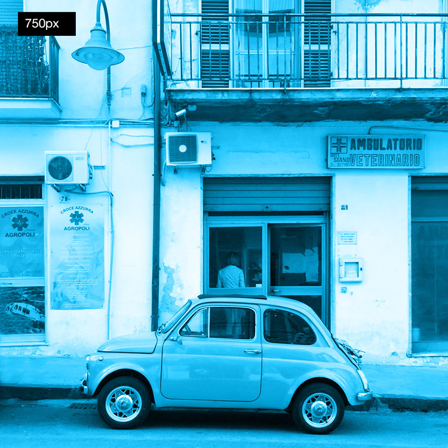

Source set
To be used when resolution needs to change and not crop.
The browser will load the nearest required size first - then resize that version if the browser is resized. This means mulitiple versions of the same image are not downloaded.
It also means that all the various image sizes will not be seen unless the browser cache is cleared first.
You can see this working by clearing the browser cache, then opening the page at the smallest browser size. The picture will change as the browser is enlarged.
Picture
To be used when the crop needs to change on browser resize and a different image is displayed. Less effective as srcset as a new image will be downloaded when the browser is resized.

Crop adjustment with object position and object fit